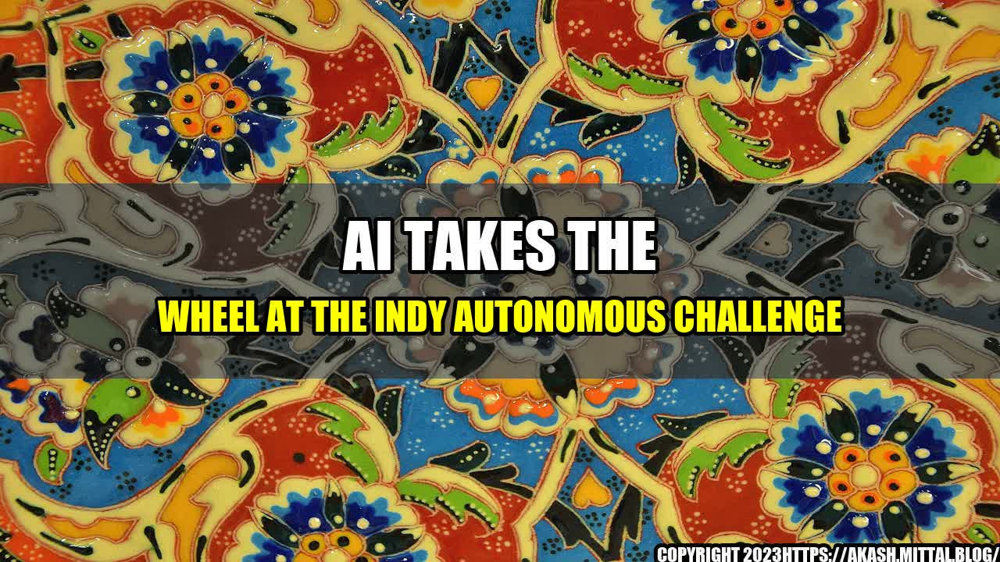

AI Takes the Wheel at the Indy Autonomous Challenge
The year is 2050 and the Indianapolis 500 is underway. The only difference? There are no drivers behind the wheels of the sleek, high-tech cars speeding around the legendary track. Instead, the cars are being guided by advanced technology such as artificial intelligence, transforming the race into an entirely new experience for spectators and participants alike.

The Indy Autonomous Challenge
The scenario described above isn't just the stuff of science fiction; it's the goal of the Indy Autonomous Challenge, a competition that will pit university teams against each other to develop the most advanced autonomous car technology. The cars will be tested on the Indianapolis Motor Speedway in October 2021, and the winner will receive a $1 million prize.
The Potential of AI in Racing
While the Indy Autonomous Challenge is certainly exciting for racing enthusiasts, it's also a showcase of how advanced technology can revolutionize the world of transportation and beyond. Here are just a few examples:
- Improved Safety: Self-driving cars have the potential to significantly reduce accidents caused by human error, which account for the majority of crashes on the road.
- Increased Efficiency: Autonomous cars have the ability to communicate with each other and make real-time adjustments to their routes, reducing congestion and improving overall traffic flow.
- New Business Opportunities: Autonomous cars will require new infrastructure and technology, creating opportunities for companies in areas such as software development and data analytics.
The Indy Autonomous Challenge will help accelerate the development of autonomous car technology by providing a competitive platform for innovation and collaboration.
Real-World Applications of AI
The impact of AI on racing is just the beginning. The technology has the potential to transform a wide range of industries and improve our everyday lives:
- Healthcare: AI can be used to analyze vast amounts of medical data and help doctors make more accurate diagnoses and treatment plans.
- Manufacturing: AI can optimize production processes, reduce waste, and improve quality control.
- Education: AI can personalize teaching and learning experiences for students, improving outcomes and reducing drop-out rates.
The possibilities are virtually endless, and the Indy Autonomous Challenge is just one example of how AI is driving innovation and progress in numerous fields.
Conclusion
The Indy Autonomous Challenge is more than just a race; it's a showcase of the incredible potential of artificial intelligence to transform the way we live, work, and play. By pushing the boundaries of autonomous car technology, the participating teams are paving the way for a future that is safer, more efficient, and more connected than ever before. The possibilities are vast, but one thing is certain – the future is driven by AI.
- Indy Autonomous Challenge: https://www.indyautonomouschallenge.com/
- #AI #artificialintelligence #IndyAutonomousChallenge #racing #innovation #selfdrivingcars
- Technology & Innovation
Curated by Team Akash.Mittal.Blog
Share on Twitter Share on LinkedIn